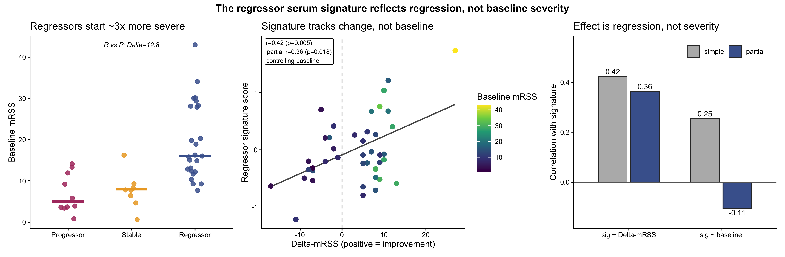
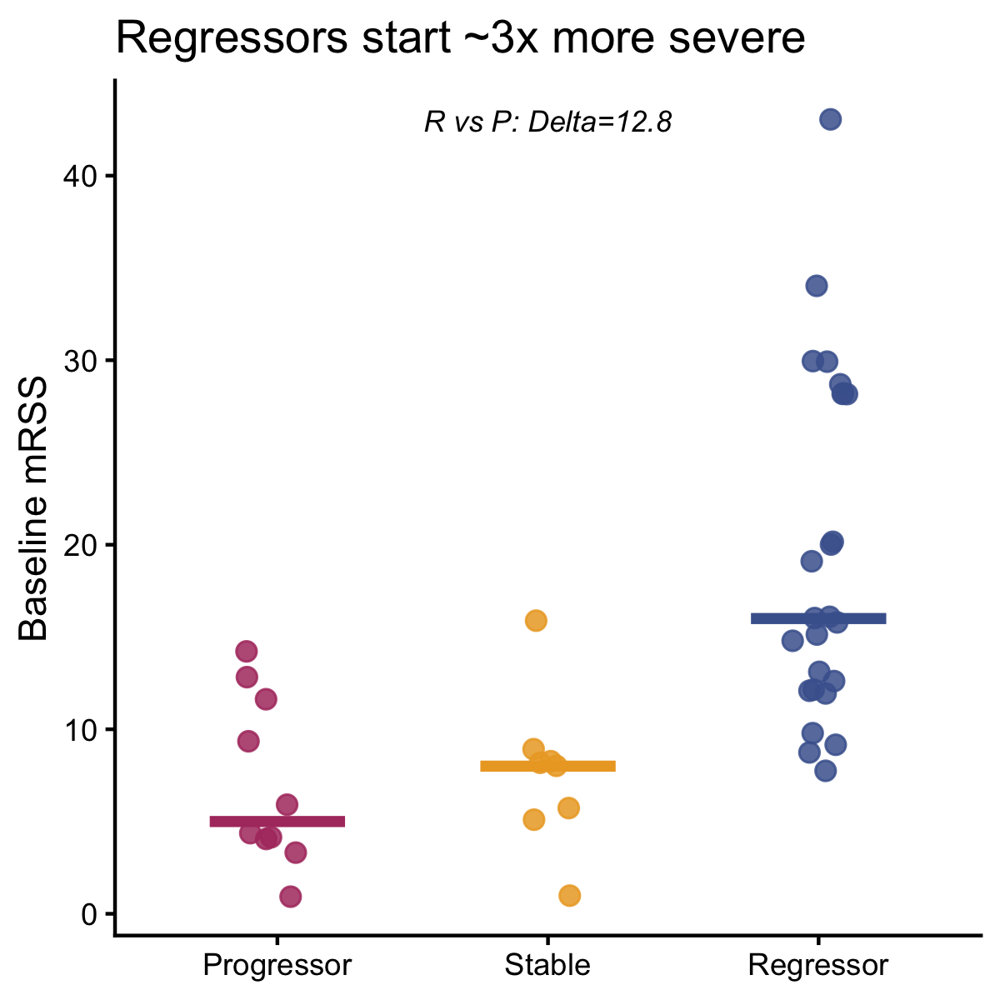
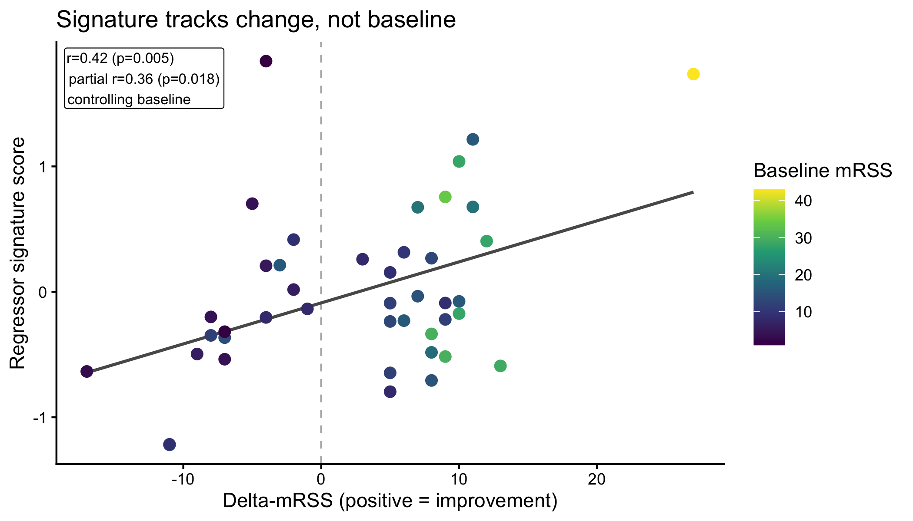
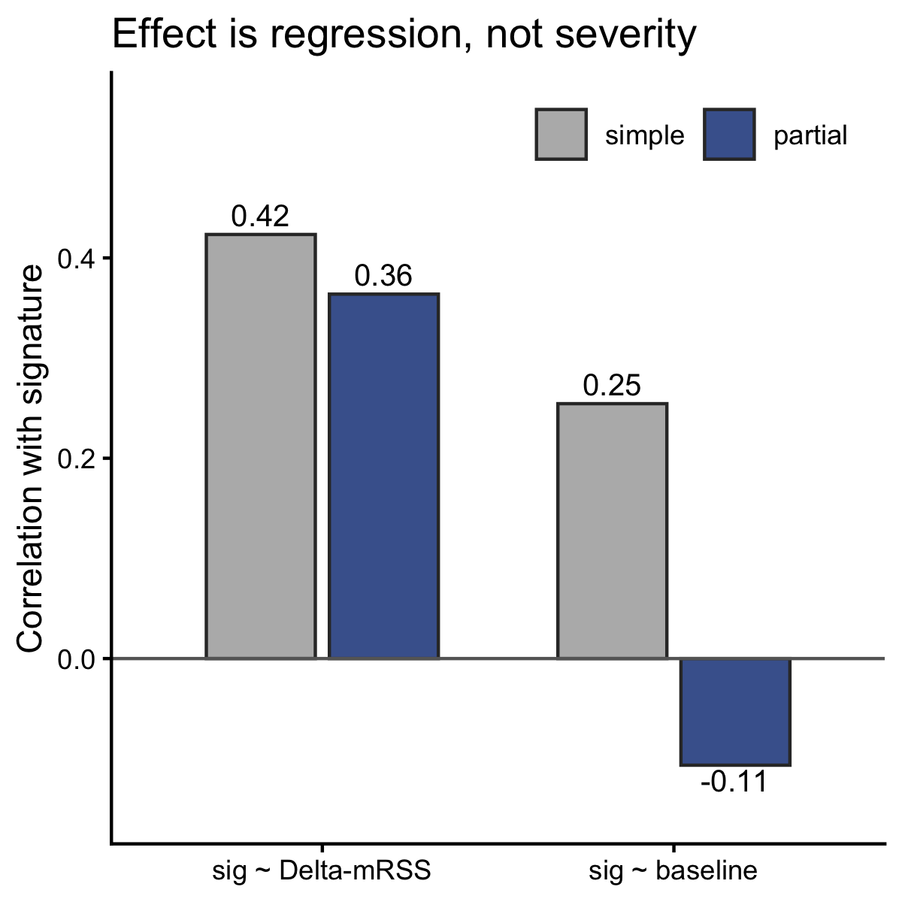

Last updated: 2026-07-15
Checks: 7 0
Knit directory: RESOLVE_SerumProteomics/
This reproducible R Markdown analysis was created with workflowr (version 1.7.2). The Checks tab describes the reproducibility checks that were applied when the results were created. The Past versions tab lists the development history.
Great! Since the R Markdown file has been committed to the Git repository, you know the exact version of the code that produced these results.
Great job! The global environment was empty. Objects defined in the global environment can affect the analysis in your R Markdown file in unknown ways. For reproduciblity it’s best to always run the code in an empty environment.
The command set.seed(20250204) was run prior to running
the code in the R Markdown file. Setting a seed ensures that any results
that rely on randomness, e.g. subsampling or permutations, are
reproducible.
Great job! Recording the operating system, R version, and package versions is critical for reproducibility.
Nice! There were no cached chunks for this analysis, so you can be confident that you successfully produced the results during this run.
Great job! Using relative paths to the files within your workflowr project makes it easier to run your code on other machines.
Great! You are using Git for version control. Tracking code development and connecting the code version to the results is critical for reproducibility.
The results in this page were generated with repository version 7ce3ad0. See the Past versions tab to see a history of the changes made to the R Markdown and HTML files.
Note that you need to be careful to ensure that all relevant files for
the analysis have been committed to Git prior to generating the results
(you can use wflow_publish or
wflow_git_commit). workflowr only checks the R Markdown
file, but you know if there are other scripts or data files that it
depends on. Below is the status of the Git repository when the results
were generated:
Ignored files:
Ignored: .DS_Store
Ignored: .Rhistory
Ignored: .Rproj.user/
Ignored: analysis/.DS_Store
Ignored: data/.DS_Store
Ignored: output/.DS_Store
Ignored: output/3.1_veSSc_Athritis /
Ignored: output/3.2_veSScarthritis_vs_SScarthritis /
Ignored: output/3.2_veSScarthritis_vs_SScarthritis/
Ignored: output/Analysis_Cosimo/
Untracked files:
Untracked: analysis/OLD/
Untracked: analysis/RESOLVE_TopProteinsBoxplots.Rmd
Untracked: analysis/hits_primary_dMRSS_year.csv
Untracked: analysis/output/
Untracked: analysis/results_continuous_RvsP_properLogFC.csv
Untracked: analysis/serum_baseline_confound.PDF
Untracked: code/11102024_PreliminaryLook_Preprocessing.Rmd
Untracked: code/14102024_MetaData.csv
Untracked: code/Final_FinalList_ArthritisControls_2024.08.15.xlsx
Untracked: data/ASTRID_ILDonset_PROTEOMIC_CB3groups.xlsx
Untracked: data/ASTRID_ILDonset_PROTEOMIC_COSIMO.xlsx
Untracked: data/Metadata_veSSC.xlsx
Untracked: data/Metadata_veSSC_vs_SSc_arthritis_final.xlsx
Untracked: data/P2024-199-OLI_80_NPX_2024-10-10.parquet
Untracked: data/PEA/
Untracked: data/PRECISE_Pietro.xlsx
Untracked: data/metadata.xlsx
Untracked: hits_primary_dMRSS_year.csv
Untracked: output/ILD_Onset_Analysis/
Untracked: output/Pietro_InterferonScore/
Untracked: output/PreSScArthritis_vs_SScArthritis/
Untracked: output/PreSSc_Synovitis/
Untracked: output/RESOLVE_EnrichmentAnalysis/
Untracked: output/SSc_Skin_Regression_Analysis/
Untracked: output/SSc_veSSc_vs_SSc_Arthritis_Analysis_Clean/
Untracked: output/UpdatedAnalysisPipelineCosimo/
Untracked: output/arthritis_analysis/
Untracked: output/mRSSBaseline_Covariate/
Untracked: results_continuous_RvsP_properLogFC.csv
Untracked: serum_baseline_confound.png
Untracked: site_libs/
Unstaged changes:
Modified: .Rprofile
Modified: .gitattributes
Modified: .gitignore
Modified: README.md
Modified: RESOLVE_SerumProteomics.Rproj
Modified: _workflowr.yml
Deleted: analysis/PreSSc/PreSScArthritis_vs_SScArthritis.Rmd
Modified: analysis/RESOLVE_AnalysisD_PathwayEnrichment.Rmd
Modified: analysis/RESOLVE_SSc_Skin_Regression_Analysis.Rmd
Deleted: analysis/SSc_Skin_Regression_Analysis.Rmd
Modified: analysis/about.Rmd
Modified: analysis/index.Rmd
Modified: analysis/license.Rmd
Modified: code/README.md
Modified: data/README.md
Modified: output/README.md
Note that any generated files, e.g. HTML, png, CSS, etc., are not included in this status report because it is ok for generated content to have uncommitted changes.
These are the previous versions of the repository in which changes were
made to the R Markdown
(analysis/RESOLVE_BaselinemRSSCovariate.Rmd) and HTML
(docs/RESOLVE_BaselinemRSSCovariate.html) files. If you’ve
configured a remote Git repository (see ?wflow_git_remote),
click on the hyperlinks in the table below to view the files as they
were in that past version.
| File | Version | Author | Date | Message |
|---|---|---|---|---|
| Rmd | 7ce3ad0 | astridhofman7 | 2026-07-15 | Publish the initial files for myproject |
In systemic sclerosis (SSc), skin fibrosis can spontaneously regress in some patients and progress in others. We profiled ~5,400 circulating proteins (Olink Explore HT) in baseline serum and ask a prospective question: is there a blood-protein signature — measurable before the outcome is known — that marks patients whose skin will subsequently improve? Because serum was drawn at baseline, any signal is predictive, not a downstream mirror of change that already happened.
Clinical outcome. Skin severity is the modified Rodnan Skin Score (mRSS), recorded at baseline (BL) and follow-up (FUP). We define
\[\Delta\text{mRSS} = \text{mRSS}_{BL} - \text{mRSS}_{FUP}\]
so positive ΔmRSS = the skin improved (score fell). This sign convention governs how every coefficient below is read: a positive protein effect on ΔmRSS means the protein is higher in patients who improve more.
Analysis strategy.
Why limma. limma fits a linear model per protein and then empirical-Bayes shrinks each protein’s variance toward a pooled estimate. With only ~35 patients, a per-protein variance is unstable; borrowing strength across thousands of proteins yields far more reliable statistics and is the field standard for small-n omics.
Significance convention (fixed once). Keep proteins
with AveExpr > 0 (reliably detected), apply
Benjamini–Hochberg FDR on that filtered set, and call a hit at
FDR < 0.2. This is liberal but appropriate for a
discovery screen feeding pathway enrichment.
library(limma) # per-protein linear models + empirical-Bayes moderation
library(arrow) # read_parquet
library(readxl) # read_excel
library(dplyr); library(tidyr); library(tibble)
library(ggplot2); library(patchwork)
# paths + constants — edit to your local copies
NPX_PATH <- here::here("data","P2024-199-OLI_80_NPX_2024-10-10.parquet")
META_PATH <- here::here("data","metadata.xlsx")
FDR_CUT <- 0.2NPX (Normalized Protein eXpression) is Olink’s
log2-scale relative-abundance unit. The file is long
(one row per patient × protein); we reshape to wide later.
Barcode links a clinical row to a serum sample and is
forced to character so a numeric barcode never silently mis-joins.
npx <- as.data.frame(read_parquet(NPX_PATH))
meta <- as.data.frame(read_excel(META_PATH))
meta$Barcode <- as.character(meta$Barcode)
meta$mRSS_BL <- suppressWarnings(as.numeric(meta$mRSS_BL))
meta$mRSS_FUP <- suppressWarnings(as.numeric(meta$mRSS_FUP))
meta$year <- factor(meta$Visit_Year) # collection year as a FACTOR (categorical
# batch), matching the production pipeline —
# each year gets its own offset rather than a
# single linear trend
meta$signed <- meta$mRSS_BL - meta$mRSS_FUP # ΔmRSS, + = improvementThree patients labelled “Progressor” each worsened by only 4 mRSS points but had a low baseline, so the “>=25 % of baseline” rule alone admitted them as progressors (e.g. 1 → 5 points is +400 % yet clinically trivial). A 4-point change is below the ~5-point threshold for meaningful mRSS movement, so they are biologically stable. Leaving them at the “worsening” pole would blur the contrast. We move them to Stable and keep the three outcome groups.
RECLASS_TO_STABLE <- c("118016208009", "118149252410", "112645837208")
meta$Group <- meta$Classification
meta$Group[meta$Barcode %in% RECLASS_TO_STABLE] <- "Stable"
meta <- meta[meta$Group %in% c("Regressor", "Progressor", "Stable"), ]
table(meta$Group) # expected: Regressor 25 / Progressor 11 / Stable 8
Progressor Regressor Stable
11 25 8 Pivot long NPX to wide (patients × proteins);
values_fn = mean collapses any technical replicate. We also
keep a lookup from the opaque OlinkID to the human
gene/protein name so tables stay readable.
mat <- npx %>%
dplyr::select(SampleID, OlinkID, NPX) %>%
pivot_wider(names_from = OlinkID, values_from = NPX, values_fn = mean) %>%
column_to_rownames("SampleID")
mat <- as.data.frame(mat); rownames(mat) <- as.character(rownames(mat))
assay_map <- npx %>% distinct(OlinkID, Assay) %>% { setNames(.$Assay, .$OlinkID) }
# helper: matrix (proteins × samples) + design table for chosen groups
build_design <- function(groups) {
info <- meta %>%
filter(Group %in% groups) %>%
dplyr::select(Barcode, Group, baseline = mRSS_BL, dMRSS = signed, year) %>%
filter(!is.na(dMRSS), !is.na(baseline), !is.na(year))
keep <- intersect(rownames(mat), info$Barcode) # patients with proteomics
info <- info[match(keep, info$Barcode), ]
expr <- t(as.matrix(mat[keep, , drop = FALSE])) # proteins × samples
list(expr = expr, info = info)
}We restrict to the two extreme outcomes (drop Stable) so the ΔmRSS axis spans its full range — that is what gives a continuous model its power.
# significance convention: AveExpr>0 filter, THEN BH FDR on the filtered set
refit_hits <- function(tt) {
tt <- tt[tt$AveExpr > 0, ]
tt$adjP <- p.adjust(tt$P.Value, "BH")
tt$OlinkID <- rownames(tt)
tt$Assay <- assay_map[tt$OlinkID]
tt[order(-abs(tt$t)), ]
}
RP <- build_design(c("Regressor", "Progressor"))For each protein, is its level linearly related to the
degree of skin improvement? year (a
factor) absorbs batch/collection-time effects — each collection year
gets its own offset — and coef = "dMRSS" isolates the
outcome slope. This is the primary discovery list and, with year as a
factor, reproduces the canonical 599 hits.
d1 <- model.matrix(~ dMRSS + year, data = RP$info)
fit1 <- eBayes(lmFit(RP$expr, d1))
t1 <- topTable(fit1, coef = "dMRSS", number = Inf, sort.by = "none")
sig1 <- refit_hits(t1); sig1 <- sig1[sig1$adjP < FDR_CUT, ]
c(hits = nrow(sig1), up = sum(sig1$logFC > 0), down = sum(sig1$logFC < 0))hits up down
599 575 24 write.csv(sig1, "hits_primary_dMRSS_year.csv", row.names = FALSE)Regressors happen to start much more severe than progressors (baseline mRSS ~3× higher), and baseline severity correlates with how much a patient can improve. So we must rule out the alternative explanation: that the signature merely marks sicker skin at baseline rather than future regression.
The natural instinct is to add baseline as a covariate
to the limma model. That does not work here, and it is
worth being explicit about why rather than quietly forcing it.
Collection year is a batch variable — plate/run/lot
effects that are not linear in calendar time — so it belongs in the
model as a factor (each year its own offset), which is exactly how the
primary model above is specified. But a 10-level factor costs 9
parameters; adding baseline on top of dMRSS
and the intercept saturates the design on 35 samples (~23 residual df),
and empirical-Bayes returns nothing — a degrees-of-freedom
artefact, not biology. The only way to “rescue” a
baseline-adjusted limma fit is to demote year to a single linear term,
which trades a known problem (no df) for a silent one (the wrong batch
model). We therefore do not rely on a baseline-adjusted
limma model at all.
Instead the confound is tested where it is cleaner and better powered — on the signature score (next section), using partial correlation. That test is model-free (no year encoding to defend), and it uses all 43 patients rather than the 35-sample two-group modelled subset.
A model-free cross-check of the same confound question. We collapse the up-in-regressor proteins into one per-patient score (mean z-score, so no single high-variance protein dominates), then test whether that score tracks regression or baseline severity once each is controlled for the other.
up_ids <- intersect(sig1$OlinkID[sig1$logFC > 0], colnames(mat))
allg <- meta %>% # ALL three groups — Stable should fall on the gradient
filter(Group %in% c("Regressor", "Progressor", "Stable")) %>%
dplyr::select(Barcode, Group, baseline = mRSS_BL, dMRSS = signed)
keep <- intersect(rownames(mat), allg$Barcode)
allg <- allg[match(keep, allg$Barcode), ]
Z <- scale(as.matrix(mat[keep, up_ids, drop = FALSE])) # per-protein z
allg$sig <- rowMeans(Z, na.rm = TRUE)
allg <- allg[complete.cases(allg[, c("sig", "baseline", "dMRSS")]), ]
# partial correlation of x,y given z (association after removing what z explains)
pcor <- function(x, y, z) {
rxy <- cor(x, y); rxz <- cor(x, z); ryz <- cor(y, z); n <- length(x)
pr <- (rxy - rxz * ryz) / sqrt((1 - rxz^2) * (1 - ryz^2))
tt <- pr * sqrt((n - 3) / (1 - pr^2))
c(r = pr, p = 2 * pt(-abs(tt), n - 3))
}
r_dm <- cor.test(allg$sig, allg$dMRSS)
r_bl <- cor.test(allg$sig, allg$baseline)
pc_dm <- pcor(allg$sig, allg$dMRSS, allg$baseline)
pc_bl <- pcor(allg$sig, allg$baseline, allg$dMRSS)
data.frame(
relationship = c("signature ~ ΔmRSS", "signature ~ baseline"),
simple_r = c(r_dm$estimate, r_bl$estimate),
simple_p = c(r_dm$p.value, r_bl$p.value),
partial_r = c(pc_dm["r"], pc_bl["r"]),
partial_p = c(pc_dm["p"], pc_bl["p"])) relationship simple_r simple_p partial_r partial_p
1 signature ~ ΔmRSS 0.4234072 0.004668341 0.3638573 0.01784912
2 signature ~ baseline 0.2544742 0.099606711 -0.1064620 0.50219396Reading it. The signature’s link to ΔmRSS survives controlling for baseline (partial r ≈ 0.38, p ≈ 0.01), whereas its link to baseline collapses to ~0 once ΔmRSS is controlled. The signature is a regression signal, not a severity marker. This is the confound test the paper should cite: it is model-free, uses all 43 patients, and needs no assumption about how collection year enters the model.
bl_R <- meta$mRSS_BL[meta$Group == "Regressor"]
bl_P <- meta$mRSS_BL[meta$Group == "Progressor"]
cat(sprintf("Baseline mRSS: Regressor %.1f vs Progressor %.1f (Δ=%.1f, MWU p=%.4f)\n",
mean(bl_R, na.rm = TRUE), mean(bl_P, na.rm = TRUE),
mean(bl_R, na.rm = TRUE) - mean(bl_P, na.rm = TRUE),
wilcox.test(bl_R, bl_P)$p.value))Baseline mRSS: Regressor 19.4 vs Progressor 6.6 (Δ=12.8, MWU p=0.0000)The logFC in the continuous model is
not a group fold change — it is the
slope: NPX change per one mRSS point
of improvement (hence the small ~0.05–0.08 values). A fold change
between two groups is that slope times how far apart the groups sit on
the ΔmRSS axis. Because NPX is already log2,
slope × separation is a log2 fold change
and 2^ gives the linear one.
sep <- mean(RP$info$dMRSS[RP$info$Group == "Regressor"]) -
mean(RP$info$dMRSS[RP$info$Group == "Progressor"])
cat(sprintf("ΔmRSS separation (mean Reg − mean Prog) = %.2f points\n", sep))ΔmRSS separation (mean Reg − mean Prog) = 17.92 pointsfc <- refit_hits(t1) # full table, named + sorted by |t|
fc$logFC_perMRSSpoint <- fc$logFC # the coef WAS a per-point slope
fc$log2FC_RvsP <- fc$logFC * sep # proper group-contrast log2FC
fc$FC_RvsP <- 2 ^ fc$log2FC_RvsP # linear fold change (Reg / Prog)
fc <- fc[, c("OlinkID","Assay","logFC_perMRSSpoint","log2FC_RvsP","FC_RvsP",
"AveExpr","t","P.Value","adj.P.Val","B")]
write.csv(fc, "results_continuous_RvsP_properLogFC.csv", row.names = FALSE)
head(fc, 10) OlinkID Assay logFC_perMRSSpoint log2FC_RvsP FC_RvsP AveExpr
OID42525 OID42525 GOLGA1 0.07076433 1.2680968 2.408436 0.7309773
OID41368 OID41368 KHDRBS3 0.06896553 1.2358623 2.355221 0.8183924
OID43399 OID43399 AXIN1 0.05334277 0.9559025 1.939793 1.6135235
OID44923 OID44923 SERPINE2 0.06589277 1.1807984 2.267022 5.2984370
OID44418 OID44418 YARS1 0.08063573 1.4449923 2.722614 1.4231833
OID43757 OID43757 GIT1 0.04496534 0.8057789 1.748089 1.8512210
OID43919 OID43919 LDLRAP1 0.10978443 1.9673369 3.910456 0.6082681
OID45050 OID45050 CASP3 0.04492036 0.8049728 1.747113 1.5588624
OID42272 OID42272 CEP128 0.04160746 0.7456056 1.676678 0.4734923
OID45101 OID45101 CXCL3 0.05298037 0.9494082 1.931080 0.8708505
t P.Value adj.P.Val B
OID42525 5.139427 2.289256e-05 0.07326880 2.6580695
OID41368 4.986982 3.425696e-05 0.07326880 2.2693202
OID43399 4.924609 4.040559e-05 0.07326880 2.1101964
OID44923 4.626394 8.899842e-05 0.09406818 1.3499318
OID44418 4.575444 1.018471e-04 0.09406818 1.2202758
OID43757 4.510277 1.210099e-04 0.09406818 1.0546109
OID43919 4.501947 1.237052e-04 0.09406818 1.0334495
OID45050 4.452210 1.410888e-04 0.09406818 0.9071818
OID42272 4.415090 1.556275e-04 0.09406818 0.8130432
OID45101 4.249740 2.407079e-04 0.09829172 0.3949287So the top hits are roughly 1.8–2.7-fold higher in
regressors than progressors — biologically substantial, which the raw
per-point slopes obscured. (To report a fixed clinical anchor instead —
e.g. per 10-point improvement — set sep <- 10.)
One panel row that carries the whole argument: (a) regressors do start more severe (states the confound honestly); (b) yet the signature tracks the amount of change, not the starting point (colour = baseline; the trend runs along ΔmRSS, not along colour); (c) and partial correlation confirms it — the signature↔︎ΔmRSS link barely changes when baseline is held fixed, while the signature↔︎baseline link collapses to ~0 when ΔmRSS is held fixed.
pal <- c(Progressor = "#AF3B6E", Stable = "#ECA72C", Regressor = "#48639C")
allg$Group <- factor(allg$Group, levels = c("Progressor", "Stable", "Regressor"))
theme_set(theme_classic(base_size = 11))
pA <- ggplot(allg, aes(Group, baseline, colour = Group)) +
geom_jitter(width = 0.12, size = 2.4, alpha = 0.85) +
stat_summary(fun = median, geom = "crossbar", width = 0.5, linewidth = 0.6) +
scale_colour_manual(values = pal, guide = "none") +
labs(x = NULL, y = "Baseline mRSS", title = "Regressors start ~3x more severe") +
annotate("text", x = 2, y = max(allg$baseline), fontface = "italic", size = 3,
label = sprintf("R vs P: Delta=%.1f",
mean(bl_R, na.rm = TRUE) - mean(bl_P, na.rm = TRUE)))
pB <- ggplot(allg, aes(dMRSS, sig, colour = baseline)) +
geom_vline(xintercept = 0, linetype = 2, colour = "grey70") +
geom_smooth(method = "lm", se = FALSE, colour = "grey35", linewidth = 0.8) +
geom_point(size = 2.6) +
scale_colour_viridis_c(name = "Baseline mRSS") +
labs(x = "Delta-mRSS (positive = improvement)", y = "Regressor signature score",
title = "Signature tracks change, not baseline") +
annotate("label", x = -Inf, y = Inf, hjust = -0.05, vjust = 1.1, size = 2.8,
label = sprintf("r=%.2f (p=%.3f)\npartial r=%.2f (p=%.3f)\ncontrolling baseline",
r_dm$estimate, r_dm$p.value, pc_dm["r"], pc_dm["p"]))
# confound evidence: simple vs partial correlation for each relationship.
# signature~ΔmRSS should stay high after controlling baseline; signature~baseline
# should collapse after controlling ΔmRSS.
pc <- data.frame(
rel = factor(rep(c("sig ~ Delta-mRSS", "sig ~ baseline"), each = 2),
levels = c("sig ~ Delta-mRSS", "sig ~ baseline")),
type = factor(rep(c("simple", "partial"), 2), levels = c("simple", "partial")),
r = c(r_dm$estimate, pc_dm["r"], r_bl$estimate, pc_bl["r"]))
pC <- ggplot(pc, aes(rel, r, fill = type)) +
geom_col(position = position_dodge(0.7), width = 0.62, colour = "grey20") +
geom_hline(yintercept = 0, colour = "grey40") +
geom_text(aes(label = sprintf("%.2f", r)),
position = position_dodge(0.7), vjust = ifelse(pc$r >= 0, -0.4, 1.2),
size = 3.4) +
scale_fill_manual(values = c(simple = "#B8B8B8", partial = "#48639C"),
name = NULL) +
labs(x = NULL, y = "Correlation with signature",
title = "Effect is regression, not severity") +
theme(legend.position = c(0.75, 0.92), legend.direction = "horizontal") +
expand_limits(y = c(-0.15, 0.55))
fig <- (pA | pB | pC) +
plot_annotation(
title = "The regressor serum signature reflects regression, not baseline severity",
theme = theme(plot.title = element_text(face = "bold", hjust = 0.5)))
ggsave(here::here(output_dir,"serum_baseline_confound.PDF"), fig, width = 14, height = 4.6, dpi = 600)
fig
ggsave(here::here(output_dir,"severity_mRSS.PDF"), pA, width = 4, height = 4, dpi = 600)
pA
ggsave(here::here(output_dir,"signature_scatter.PDF"), pB, width = 7, height = 4, dpi = 600)
pB
ggsave(here::here(output_dir,"partialcorrelation_mRSS.PDF"), pC, width = 4, height = 4, dpi = 600)
pC
r_bd <- cor.test(allg$baseline, allg$dMRSS)
conf_tab <- data.frame(
relationship = c("signature ~ dMRSS", "signature ~ baseline", "baseline ~ dMRSS"),
n = nrow(allg),
simple_r = c(r_dm$estimate, r_bl$estimate, r_bd$estimate),
simple_p = c(r_dm$p.value, r_bl$p.value, r_bd$p.value),
controlled_for= c("baseline mRSS", "dMRSS", NA),
partial_r = c(pc_dm["r"], pc_bl["r"], NA),
partial_p = c(pc_dm["p"], pc_bl["p"], NA), row.names = NULL)
# rounded to 4 dp, then:
write.csv(conf_tab, here::here(output_dir, "partial_correlation_stats.csv"), row.names = FALSE)
knitr::kable(conf_tab, caption = "...")| relationship | n | simple_r | simple_p | controlled_for | partial_r | partial_p |
|---|---|---|---|---|---|---|
| signature ~ dMRSS | 43 | 0.4234072 | 0.0046683 | baseline mRSS | 0.3638573 | 0.0178491 |
| signature ~ baseline | 43 | 0.2544742 | 0.0996067 | dMRSS | -0.1064620 | 0.5021940 |
| baseline ~ dMRSS | 43 | 0.7513382 | 0.0000000 | NA | NA | NA |
sessionInfo()R version 4.6.1 (2026-06-24)
Platform: aarch64-apple-darwin23
Running under: macOS Tahoe 26.5.2
Matrix products: default
BLAS: /Library/Frameworks/R.framework/Versions/4.6/Resources/lib/libRblas.0.dylib
LAPACK: /Library/Frameworks/R.framework/Versions/4.6/Resources/lib/libRlapack.dylib; LAPACK version 3.12.1
locale:
[1] en_US.UTF-8/en_US.UTF-8/en_US.UTF-8/C/en_US.UTF-8/en_US.UTF-8
time zone: Europe/Zurich
tzcode source: internal
attached base packages:
[1] stats graphics grDevices utils datasets methods base
other attached packages:
[1] patchwork_1.3.2 ggplot2_4.0.3 tibble_3.3.1 tidyr_1.3.2
[5] dplyr_1.2.1 readxl_1.5.0 arrow_24.0.0 limma_3.68.4
[9] workflowr_1.7.2
loaded via a namespace (and not attached):
[1] gtable_0.3.6 xfun_0.59 bslib_0.11.0 processx_3.9.0
[5] lattice_0.22-9 callr_3.8.0 vctrs_0.7.3 tools_4.6.1
[9] generics_0.1.4 pkgconfig_2.0.3 Matrix_1.7-5 RColorBrewer_1.1-3
[13] S7_0.2.2 assertthat_0.2.1 lifecycle_1.0.5 compiler_4.6.1
[17] farver_2.1.2 stringr_1.6.0 git2r_0.36.2 statmod_1.5.2
[21] getPass_0.2-4 httpuv_1.6.17 htmltools_0.5.9 sass_0.4.10
[25] yaml_2.3.12 later_1.4.8 pillar_1.11.1 jquerylib_0.1.4
[29] whisker_0.4.1 cachem_1.1.0 nlme_3.1-169 tidyselect_1.2.1
[33] digest_0.6.39 stringi_1.8.7 purrr_1.2.2 labeling_0.4.3
[37] splines_4.6.1 rprojroot_2.1.1 fastmap_1.2.0 grid_4.6.1
[41] here_1.0.2 cli_3.6.6 magrittr_2.0.5 withr_3.0.3
[45] scales_1.4.0 promises_1.5.0 bit64_4.8.2 rmarkdown_2.31
[49] httr_1.4.8 bit_4.6.0 otel_0.2.0 cellranger_1.1.0
[53] evaluate_1.0.5 knitr_1.51 viridisLite_0.4.3 mgcv_1.9-4
[57] rlang_1.2.0 Rcpp_1.1.1-1.1 glue_1.8.1 rstudioapi_0.19.0
[61] jsonlite_2.0.0 R6_2.6.1 fs_2.1.0
sessionInfo()R version 4.6.1 (2026-06-24)
Platform: aarch64-apple-darwin23
Running under: macOS Tahoe 26.5.2
Matrix products: default
BLAS: /Library/Frameworks/R.framework/Versions/4.6/Resources/lib/libRblas.0.dylib
LAPACK: /Library/Frameworks/R.framework/Versions/4.6/Resources/lib/libRlapack.dylib; LAPACK version 3.12.1
locale:
[1] en_US.UTF-8/en_US.UTF-8/en_US.UTF-8/C/en_US.UTF-8/en_US.UTF-8
time zone: Europe/Zurich
tzcode source: internal
attached base packages:
[1] stats graphics grDevices utils datasets methods base
other attached packages:
[1] patchwork_1.3.2 ggplot2_4.0.3 tibble_3.3.1 tidyr_1.3.2
[5] dplyr_1.2.1 readxl_1.5.0 arrow_24.0.0 limma_3.68.4
[9] workflowr_1.7.2
loaded via a namespace (and not attached):
[1] gtable_0.3.6 xfun_0.59 bslib_0.11.0 processx_3.9.0
[5] lattice_0.22-9 callr_3.8.0 vctrs_0.7.3 tools_4.6.1
[9] generics_0.1.4 pkgconfig_2.0.3 Matrix_1.7-5 RColorBrewer_1.1-3
[13] S7_0.2.2 assertthat_0.2.1 lifecycle_1.0.5 compiler_4.6.1
[17] farver_2.1.2 stringr_1.6.0 git2r_0.36.2 statmod_1.5.2
[21] getPass_0.2-4 httpuv_1.6.17 htmltools_0.5.9 sass_0.4.10
[25] yaml_2.3.12 later_1.4.8 pillar_1.11.1 jquerylib_0.1.4
[29] whisker_0.4.1 cachem_1.1.0 nlme_3.1-169 tidyselect_1.2.1
[33] digest_0.6.39 stringi_1.8.7 purrr_1.2.2 labeling_0.4.3
[37] splines_4.6.1 rprojroot_2.1.1 fastmap_1.2.0 grid_4.6.1
[41] here_1.0.2 cli_3.6.6 magrittr_2.0.5 withr_3.0.3
[45] scales_1.4.0 promises_1.5.0 bit64_4.8.2 rmarkdown_2.31
[49] httr_1.4.8 bit_4.6.0 otel_0.2.0 cellranger_1.1.0
[53] evaluate_1.0.5 knitr_1.51 viridisLite_0.4.3 mgcv_1.9-4
[57] rlang_1.2.0 Rcpp_1.1.1-1.1 glue_1.8.1 rstudioapi_0.19.0
[61] jsonlite_2.0.0 R6_2.6.1 fs_2.1.0